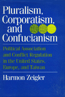

<body bgcolor="#FFFFFF" text="#000000" link="#0000FF" vlink="#CC0000" alink="#CC0000"><center><hr width="350" size="1" align="center" noshade>Defining substantial differences between individualist and collectivist societies<hr width="350" size="1" align="center" noshade><p><a href="https://cdcshoppingcart.uchicago.edu/Cart/ChicagoBook.aspx?ISBN=9780877225294&&PRESS=temple" target="_top">Buy this book!</a> | <a href="https://cdcshoppingcart.uchicago.edu/Cart/Cart.aspx?PRESS=temple" target="_top">View Cart</a> | <a href="https://cdcshoppingcart.uchicago.edu/Cart/Cart.aspx?PRESS=temple" target="_top">Check Out</a></p><p></p></center><!--none//--><h1>Pluralism, Corporatism, and Confucianism</h1>
<H2>Political Association and Conflict Regulation in the United States, Europe, and Taiwan</H2>
<h3>Harmon Zeigler</h3>
<P>cloth 0-87722-529-X $44.50, Apr 88, <FONT COLOR=#990033>Out of Stock Unavailable</FONT>
<BR> 272 pp
</P><BLOCKQUOTE><I>"With ingenuity and originality, Harmon Zeigler compares concepts and practices of pluralist and corporatist regimes in the West and adds to this a fresh comparison with partially authoritarian corporatist regimes in Asia.... An insightful contribution."</I>
<br>&#151<b>Robert E. Lane</b>, Yale University, Emeritus<I></I></BLOCKQUOTE>
<p>In this comparison of the role of interest groups in three different political settings, Harmon Zeigler addresses two main questions: Why do people join organizations? and, Does it matter how a government regulates conflict? In confronting these questions, he describes and contrasts the characteristics of pluralism in the United States, societal corporatism in Europe, and state corporatism, or authoritarianism, in Taiwan. The first book to compare such disparate cultures, <I>Pluralism, Corporatism, and Confucianism</I> examines the motivations for group membership and the functions of "encompassing" organizations.
<p>While it is generally accepted that the form of government is not the major contributor to the shape or content of policy, Zeigler suggests that there are substantial differences between individualist and collectivist societies. Because Taiwan is a "soft authoritarian" government in its mode of interest group regulation he sees it as lending itself to comparison, as an example of state corporatism, with societal corporatism of Europe.
<p>The influence of Confucianism, a secular religion that considers conflict unnatural, is evident in most Asian governments. While "Confucian" countries may vary substantially in their mode of conflict resolution, they usually adhere to the basic ethical principles of Confucius: groups are more important than individuals, and society should be organized hierarchically. In his discussion of Asian corporatism, Zeigler takes note of the recent upheavals in South Korea.
<BR>&nbsp;<h2>Reviews</h2>
<p><I>"By expanding the debate over pluralism and corporatism to include modern Confucianism, Harmon Zeigler has made a major breakthrough in our understanding of key political-economy issues in contemporary industrial societies."</I>
<br>&#151<b>Lucian W. Pye</b>, Massachusetts Institute of Technology
<BR>&nbsp;<H2>About the Author(s)</H2>
<P><b>Harmon Zeigler</b> is Philip M. Phibbs Distinguished Professor of American Politics at the University of Puget Sound and Affiliate Professor at the University of Washington.</P>
<BR><H2>Subject Categories</H2>
<p><A HREF="/tempress/political.html" TARGET="_top">Political Science and Public Policy</a>
<BR><A HREF="/tempress/asian.html" TARGET="_top">Asian Studies</a>
</p>
<p align="center"><a href="https://cdcshoppingcart.uchicago.edu/Cart/ChicagoBook.aspx?ISBN=9780877225294&&PRESS=temple" target="_top">Buy this book!</a> | <a href="https://cdcshoppingcart.uchicago.edu/Cart/Cart.aspx?PRESS=temple" target="_top">View Cart</a> | <a href="https://cdcshoppingcart.uchicago.edu/Cart/Cart.aspx?PRESS=temple" target="_top">Check Out</a></p><p><font face="Arial" size="1"><a href="copyright.html" onMouseOver="window.status='Web Copyright Policy';return true;" onMouseOut="window.status=''" title="Web Copyright Policy">&copy;</a> 2015 <a href="http://www.temple.edu" target="new" onMouseOver="window.status='Link to Temple University home page';return true;" onMouseOut="window.status=''" title="Link to Temple University home page">Temple University</a>. All Rights Reserved. http://www.temple.edu/tempress/titles/550_reg.html</font></p>